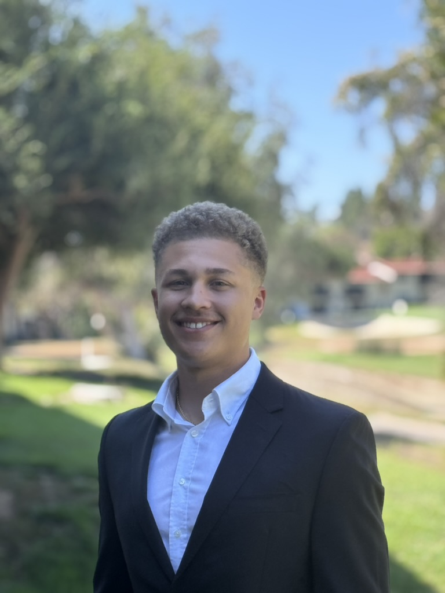

Joshua Scott
I’m a University of Washington MSITI student focusing on robotics and machine learning. I am working on camera orientation from outdoor images and designing a local AI system for long-running tasks.
Seeking a Summer 2027 robotics internship
joshscott862@gmail.comComputer Vision & Robotics Research · Ongoing
SunCompass
Can two cameras tell how they’re pointed when they see completely different scenes?
Outdoor cameras can face different directions and share no landmarks. SunCompass explores whether the sun can give robots another way to tell how their cameras are oriented.
View SunCompass on GitHubThe research challenge
When clouds, buildings, or trees hide the sun, can a model infer its direction from shadows and reflections? We’re studying whether those clues can support more reliable estimates in unfamiliar outdoor settings.
My contributions & findings
On this collaborative project, I design experiments, evaluate predictions, and build reproducible training workflows with AI-assisted implementation.
Keeping more of the image
I tested a wider image crop with the same model. Average camera-to-camera orientation error fell 27% across 63 driving scenes. The remaining error was substantial. The experiment showed me how much image preparation can affect performance even when the model stays fixed.
Driving-scene experiment details
Mean absolute error in the horizontal angle between cameras fell from 81.8° to 59.7°, improving in 54 of 63 scenes. The evaluation used 63,030 WayveScenes101 images from five cameras and 126,060 camera-pair comparisons, with camera orientations reconstructed using COLMAP as the reference.
Testing image resolution
I built a repeatable training and evaluation pipeline and tested it on one fixed outdoor webcam. Smaller images cut training time while yielding similar median sun-direction error on held-out images from that same camera.
Webcam pilot details
In the single-camera AMOS pilot, 612 × 612 inputs took 1 h 26 min to train, compared with 3 h 57 min at 1024 × 1024. Both runs used 50 epochs on the same GPU. I used camera calibration to label the sun’s direction.
What I’m investigating next
In progress. We’re designing tests on entirely unseen cameras to see whether training across varied scenes, lighting, and seasons helps the model use sunlight cues beyond familiar settings.
Future goal. Test whether better sun-direction estimates improve camera-to-camera orientation.
AI Systems · Personal Project
Daedalus
I want to give a local AI system a task that takes months and have it pick up tomorrow where it left off today.
Daedalus is my design for an autonomous system builder. I want it to coordinate specialized models, research a problem, and build tools as the work demands. Over time, it should be able to test improvements to its own workflow while I can still inspect, interrupt, or reverse a change.
How the idea changed
In fall 2025, I wanted to build a “council” of language models I could run at home. I’d give them a hard problem, let them challenge each other’s answers, and see whether together they could reason as well as a frontier model. As frontier models kept pulling ahead, I started to care more about a different question. What could a group of smaller models accomplish if each had a specific job, access to tools, and time to keep working?
In early 2026, I redesigned Daedalus around that idea. I kept a place for debate where a second opinion would help. Other jobs called for different kinds of models or ordinary code. The ambition grew from answering one difficult question to carrying a project through days, months, or even years of work.
What I built and learned
I designed the architecture, directed AI-assisted implementation, and tested how the prototype handled memory and tool permissions.
Remembering which instruction still applies
A preference I set in one conversation might change in the next, or apply to only one project. Testing those cases taught me that recalling both instructions solves only half the problem. The system also needs a way to decide which one governs the next step. I built project-scoped, versioned memory so I could inspect that choice and trace it back to its source.
Following a tool request from decision to outcome
An approval tells me a tool was allowed to run. If I come back a week later, I also need to know whether it ran and what happened. I built separate records for the permission decision and the outcome. Development paused with a prototype that lets me inspect those records. That work gave me a concrete requirement for longer runs: I need to be able to reconstruct what happened before I can trust the system to take the next step.
First planned application
The first job I’d give Daedalus is to build and test trading strategies continuously. Take an earnings surprise: do other stocks in the same industry tend to react later? One model could propose a rule, another could challenge its assumptions, and a simulator could replay historical data using only what was known at each decision. A promising rule could then move into equities paper trading on a platform such as Webull.
What interests me is what happens on the next pass. If a rule fails, can Daedalus trace the result back to the original idea, revise it, and design a better test? The prototype already includes a small paper-trading workbench with synthetic data. The continuous research and paper-trading cycle is the goal for a future build.
About

I’m pursuing the M.S. in Technology Innovation on the Robotics track at the University of Washington. I’m interested in how robots use cameras to orient themselves outdoors and how to design experiments that show where those systems break down.
My background brings together hands-on prototyping, support for robotics and VR research, and software development. I enjoy moving between physical systems and code: making a prototype, testing an idea, and building the tools to understand what happened.